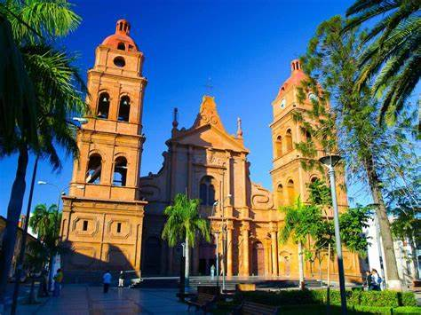
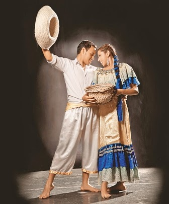

Santa Cruz de la Sierra conocida simplemente como Santa Cruz, es una ciudad localizada en los llanos orientales de Bolivia, a orillas del río Piraí. Actualmente es la ciudad más poblada del país con un total aproximado de 1,9 millones de habitantes en 2022.Es capital del Departamento de Santa Cruz, el departamento con mayor Producto Regional Bruto de Bolivia,y una de las ciudades más desarrolladas del país, con un indicador municipal de desarrollo sostenible elevado.
El majadito o majao es un plato típico de la gastronomía de Bolivia, principalmente preparado en los departamentos del Beni y Santa Cruz que data desde la época virreinal en el territorio boliviano. Este plato está preparado a base de arroz con charque (carne deshidratada), huevo, yuca y plátanos fritos, existen variaciones que reemplazan el charque por otras carnes, como la del pollo, pato, entre otros. Existen dos variedades de majadito: el majadito tostado y el majadito batido.
El taquirari es un ritmo musical y una danza boliviana, característico de la Amazonía boliviana en parte de los departamentos del Beni, Santa Cruz, Pando y La Paz.El compositor boliviano Gilberto Rojas Enríquez difundió y expandió el taquirari a nivel nacional e internacional. Compuso el taquirari "Ojos Azules" que fue adaptada posteriormente en ritmo de huayño. Igualmente en Tarija, compuso los taquiraris: Luna Chapaca y Guadalquivir.
